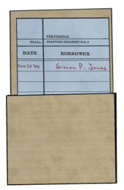

VOLUME
DUCK
Architectural Digest Volume
The World Needs One More Architectural Digest
I LOVE reading Drafting Strategy: Architectural Digest. There has been five printed volumes of them so far by the Reddington Press, and all of them are bursting with passion for craftsmanship.
However, no new volumes has come out long since its string of initial publication in 1993, and there has been advancements to the drafting techniques since. Thus I would like to rectify that and publish this as an homage to the original series.
In this extra-long issue of "UNOFFICIAL DRAFTING STRATEGY", I will bring a collection of important concepts, guidelines and ideas that has not yet been covered by the existing five volumes of Drafting Strategy: Architectural Digest.
Reader discretion is advised as this book may contain light spoilers.
Doors as a Resource
While not explicitly a number in your inventory, Doors is perhaps the most valuable unwritten resource. Rooms with many doors seem to not contain many gems, keys or items (in fact they tend to cost gems!), because it is compensated by the possibility of branching out and create more paths.
Doors are such important resource that all veteran architects share this advice:
DO NOT WASTE
DOORS EARLY
To the unaware, wasted doors have a very insidious effect - it removes the options you see as you expand your house. This leads to a vicious cycle called the SPIRAL OF DEAD ENDS - an effect that lead towards dead ending your house early.
This effect is more pronounced the earlier you waste doors, because it affects the drafting of your 30+ rooms remaining.
Drafting on Mansion Boundaries
When designing a room to face outside, windows are essential to provide natural lighting, circulation of fresh air, and comfort. At the same time, designing a room on a house’s boundaries confer multiple advantages to rooms at a house’s center rooms.
First, you will not be offered doors pointing outside the mansion. This provides massive predictability in the direction the house expands
Second, there are fewer available rooms because rooms with four doors cannot be found here. You will thus more easily find dead ends, which often holds resources.
Active Doors
Revisiting Past Editions
Stacking The Deck
Knock Before You Enter
Stepping Up Your Game
Word From The Editor